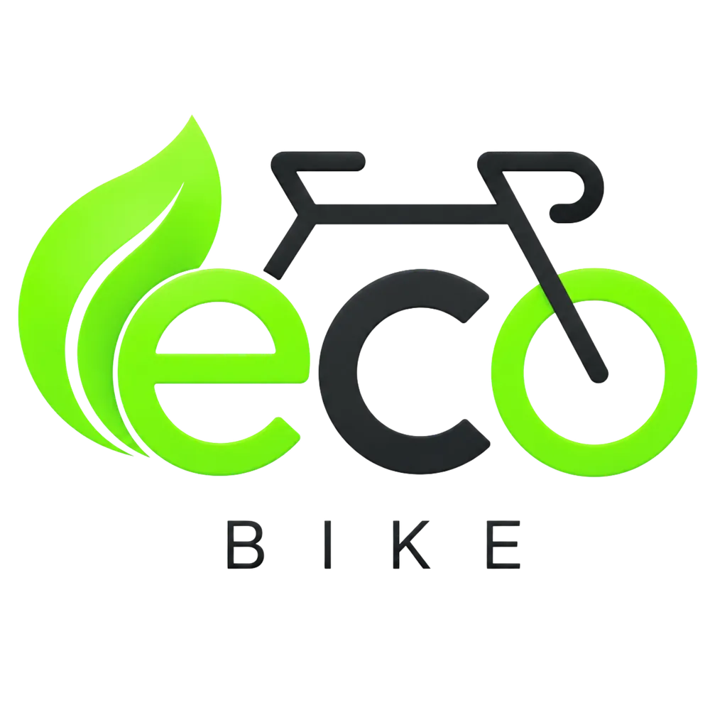

{{ c.eyebrow }}
EcoBike
{{ c.lead }}
{{ c.shotsK }}
{{ c.shotsH }}
{{ s.alt }}
{{ s.note }}
{{ c.webK }}
{{ c.webH }}
{{ c.webP }}
{{ c.featK }}
{{ c.featH }}
{{ f.h }}
{{ f.p }}
{{ c.archNote }} {{ c.archLink }}